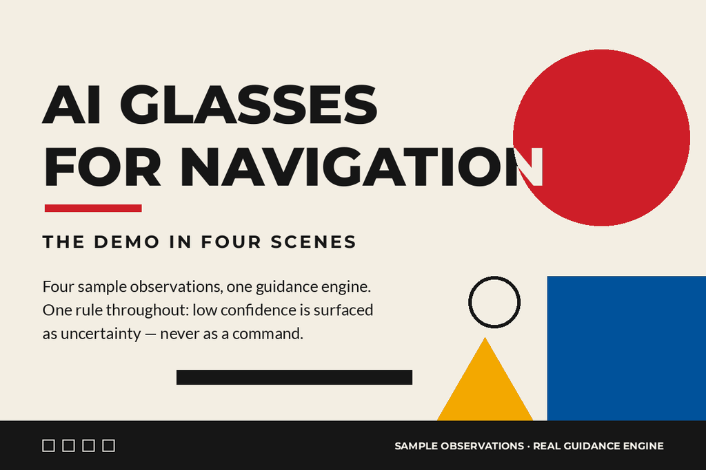
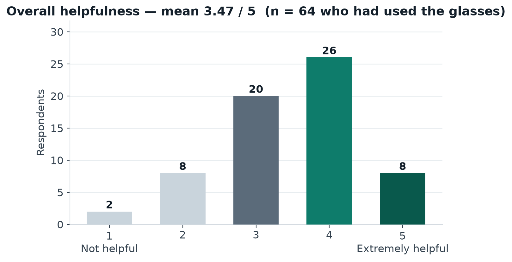
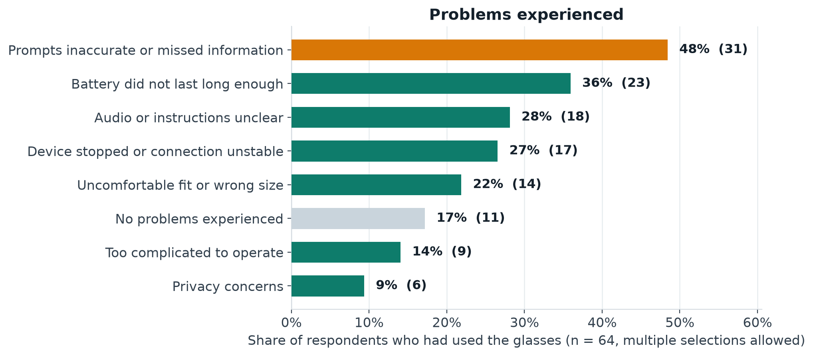

The problem
Why this, and why restraint
People with low vision need spoken guidance that is cheap and restrained. A false prompt is more dangerous than a missed one: a red light read as green is the worst error this system can make. This page does not claim a working navigation aid exists. It records two things: the safety boundary was written into the engine first, and the measured performance — including the survey’s bad results — is published as it came out.
What I built
A guidance engine with the boundary inside
- A hardware-independent guidance engine: observations in, spoken prompts out (Chinese speech). Below 0.70 confidence it says “uncertain” instead of issuing a command. Core files: aiglasses/guidance.py, pipeline.py, vision.py, service.py. Architecture: docs/ARCHITECTURE.md.
- Default perception is an OpenCV colour heuristic. A YOLOX ONNX detector is optional and is not the default evaluation path. A laptop-camera and video channel feed the same engine.
- The Continuous Facets v0.4 editable enclosure (Blender / STL), in design/v0.4/. The current release contains no finished ESP32 wearable, and the device is not a certified aid.
- Upstream, stated plainly: the project is built on AI-FanGe / OpenAIglasses_for_Navigation. My own work is the guidance rules, the evaluation harnesses, the survey and its raw data, the v0.4 enclosure, and the community materials. The upstream project’s manual images are not my work and are not shown on this page.
Evidence
What can be checked
- Survey: 85 responses. Of the 64 people who had used the glasses, 9 were still using them; 48% reported inaccurate prompts; mean helpfulness 3.47 out of 5. Source: docs/FEEDBACK.md, with the raw CSV published beside it. One limit belongs next to the headline: 51 of the 85 responses were not filled in directly by the respondent — 34 were entered by a family member or volunteer, 14 by an activity organiser, and 3 another way.
- 124 automated tests in the
tests/tree at commit 11725cd5 (2026-11-05), still current on 2026-11-09. Public run of that tree: Actions run 42235271943 (2026-11-06). Detail: claim index. - Bosch real frames. On 61 single-state red/green frames from the Bosch Small Traffic Lights Dataset, the laptop camera path committed to a state on only 4 frames (coverage 6.6%); one red frame was read as green; and on 104 frames containing no annotated light it emitted “green” on 2. Source: docs/EVALUATION.md. This is a distant, vehicle-camera benchmark — it is not head-worn, near-field performance. The dataset images are not redistributed (non-commercial licence).
- Synthetic calibration. On drawn lamp discs — 14 frames in 11 clips — the harness records 0 false prompts and 0 misses. Source: docs/EVAL.md. Drawn discs, not street validation.
- Software archive: DOI 10.5281/zenodo.23977544.
- Privacy boundary: event history retains 0 raw video, audio or location fields. Source: docs/DATA_BOUNDARIES.md.
- 3 communities received hands-on making instruction. Source: the project README and the claim index. This is instruction, not deployment.
Timeline
Public record only
- 2025-12-09 — the repository’s first public commit (12b121a3). Any earlier start date is the author’s own account and is not published here.
- 2026-07-29 — reproducible FastAPI guidance prototype and dashboard (README project timeline).
- 2026-08-26 to 2026-11-04 — survey collection window (docs/FEEDBACK.md).
- 2026-09-18 — Continuous Facets v0.4 enclosure released (release note).
- 2026-11-05 — survey analysis, Bosch evaluation and reference BOM pricing published.
- 2026-11-09 — the 124-test tree was still current on this date (public run: 2026-11-06).
Limits and next steps
What it cannot do yet
- A research prototype, not a certified mobility aid. It does not replace a white cane, a guide dog, or professional orientation and mobility support.
- Default perception is a colour heuristic. On distant Bosch frames it almost never commits to a state, and it once read red as green. Near-field performance has not been measured under the same protocol.
- The survey is a self-selected sample, and many responses were entered by family members or volunteers. There is no consented field-video dataset in the repository.
- Cost, stated with its conditions: a reference bill of materials totals US$32.29, parts only, priced 2026-11-05 (docs/BOM_PRICING.md). That figure requires the board at Seeed’s direct price and the speaker build; it excludes shipping and tax; fit with the v0.4 enclosure is unverified; and it is not the bill for any batch of built units.
- There is no photograph of a physical unit to publish yet. Next steps, neither of them done: add physical photographs or video, and rerun the evaluation protocol on labelled near-field frames.
Media
Demo and charts



Held back: the community session photograph shows identifiable faces and will only be used with consent or blurring. Not used anywhere on this site: the upstream project’s manual images, and AI-generated portraits of a wearer.